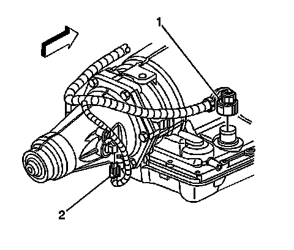
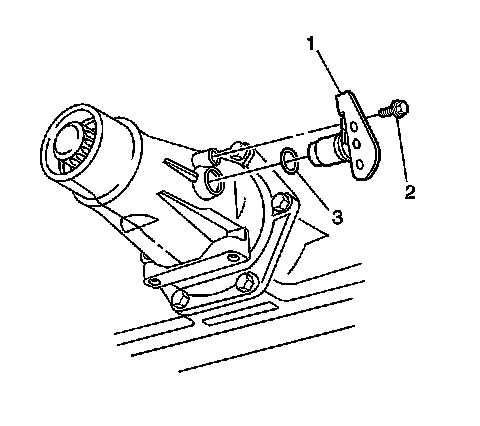

Vehicle Speed Sensor: Service and Repair
Vehicle Speed Sensor Replacement
Removal Procedure

1. Raise and suitably support the vehicle. Refer to Lifting and Jacking the Vehicle.
2. Disconnect the vehicle speed sensor (VSS) electrical connector (2).

3. Remove the VSS bolt (2).
4. Remove the VSS (1).
5. Remove the O-ring seal (3).
Installation Procedure
1. Install the O-ring seal (3) onto the VSS (1).
2. Coat the O-ring seal (3) with a thin film of transmission fluid.
3. Install the VSS (1).
Notice: Refer to Fastener Notice.
4. Install the VSS bolt (2).
Tighten the bolt to 11 N.m (97 lb in).
5. Connect the VSS electrical connector (2).
6. Lower the vehicle.
7. Refill the fluid as required.